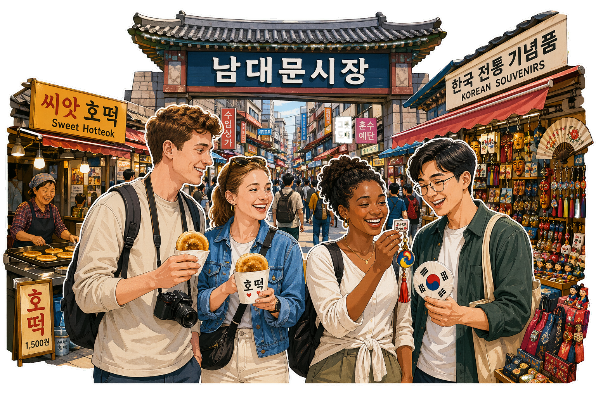

남대문시장 쇼핑 가이드:
600년 역사의 만물상 정복하기
전통과 현대가 교차하는 한국 최대의 종합 시장

숭례문을 병풍 삼아 자리 잡은 남대문시장은 명실상부 한국을 대표하는 전통시장입니다. 600년이 넘는 역사를 자랑하며, '고양이 뿔 빼고 다 있다'는 말이 있을 정도로 취급 품목이 방대합니다. 하루 방문객만 수십만 명에 달하는 이곳의 매력을 짚어드립니다.
1. 쇼핑의 성지: 카테고리별 공략
- 아동복 거리: 전국의 아동복이 모이는 곳입니다. 밤에는 도매, 낮에는 소매로 운영되며 독특하고 세련된 아이 옷을 저렴하게 살 수 있습니다.
- 액세서리 상가: 귀걸이, 목걸이 등 전 세계 액세서리 유통의 핵심입니다. 화려한 디자인의 제품들을 도매가에 가깝게 만나볼 수 있습니다.
- 군것질 & 주방용품: 수입 식품부터 전문 주방 기구까지, 요리 전문가와 애호가들의 발길이 끊이지 않습니다.
2. 금강산도 식후경: 남대문 대표 먹거리
- 갈치조림 골목: 좁은 골목 양옆으로 늘어선 양은 냄비 속 매콤한 갈치조림은 남대문시장의 상징입니다. 밥도둑이 따로 없는 깊은 맛을 느껴보세요.
- 야채호떡: 시장 입구의 긴 줄이 증명하는 맛집입니다. 당면과 채소가 가득 든 짭조름한 호떡은 든든한 간식입니다.
- 칼국수 골목: 보리밥을 시키면 칼국수와 비빔냉면을 서비스로 주는 넉넉한 인심을 경험할 수 있습니다.
3. 관광 포인트: 숭례문과 남산
남대문시장은 관광 요충지에 위치해 있습니다. 시장 구경 후 국보 1호인 '숭례문'을 바로 옆에서 관람할 수 있으며, 도보로 '남산 타워' 입구까지 이동이 가능합니다. 쇼핑과 역사 탐방, 산책을 한 번에 해결할 수 있는 최적의 코스입니다.
4. 방문객을 위한 실전 팁
- 편한 신발은 필수: 시장 규모가 워낙 크고 인파가 많아 많이 걸어야 합니다.
- 영업시간 확인: 품목별로 영업시간이 다릅니다. 아동복이나 액세서리는 밤 시장(도매)과 낮 시장(소매)이 구분되어 있으니 미리 확인하세요. 일요일은 대부분 휴무입니다.
- 위치 찾기: 4호선 회현역(남대문시장역) 5번 출구가 시장의 메인 입구와 연결됩니다.
남대문시장은 한국인의 역동적인 삶을 가장 가까이서 볼 수 있는 곳입니다. 활기찬 시장 상인들의 외침과 맛있는 음식 향기 속에서 진정한 서울의 모습을 발견해 보세요.
한눈에 보는 방문 핵심 정보
| 위치 · 지하철 | 서울 중구 남대문시장4길 21 · 4호선 회현역 5·6번 출구 바로 앞 |
|---|---|
| 영업시간 | 일반 상가 09:00 ~ 18:00 / 갈치조림·칼국수 골목 07:00 ~ 21:00 |
| 정기 휴무 | 매주 일요일 대다수 도·소매 상가 휴무 (일부 먹거리 식당만 영업) |
| 대표 먹거리·시세 | 야채호떡(2,000원), 칼국수+보리밥·냉면 세트(9,000원~), 갈치조림(13,000원~) |
| 특화 구역 | 아동복 도매(부르뎅·마마), 수입상가(도깨비시장), 주방·그릇 상가, 카메라·안경 골목 |
남대문시장 핵심 동선 3스텝
- 오전 11시 · 회현역 5번 출구 & 야채호떡: 출구 앞 명물 야채호떡으로 가볍게 시작해 대도종합상가와 수입상가를 구경합니다.
- 낮 12시 30분 · 칼국수 골목 또는 갈치조림 골목: 줄지어 늘어선 40년 노포 식당들 중 취향에 맞게 푸짐한 점심을 즐깁니다.
- 오후 2시 · 주방용품·액세서리 쇼핑 & 숭례문 산책: C·D동 그릇 도매상가나 액세서리 상가를 둘러본 뒤 국보 숭례문과 남산 한양도성 성곽길로 이어집니다.
자주 묻는 질문 (FAQ)
Q. 남대문시장은 일요일에 가면 문을 많이 닫나요?
네, 도소매 상가 특성상 일요일에는 의류·그릇·액세서리 등 대부분의 상점이 휴무입니다. 쇼핑이 목적이라면 월요일~토요일 낮 시간에 방문하는 것이 좋습니다.
Q. 아동복이나 그릇 도매 상가에서 일반 개인도 1~2개만 살 수 있나요?
낮 시간대 소매 손님에게도 낱개 판매를 하는 점포가 매우 많습니다. 다만 도매 전용 밤시장 시간대(심야)에는 낱개 판매가 제한될 수 있습니다.